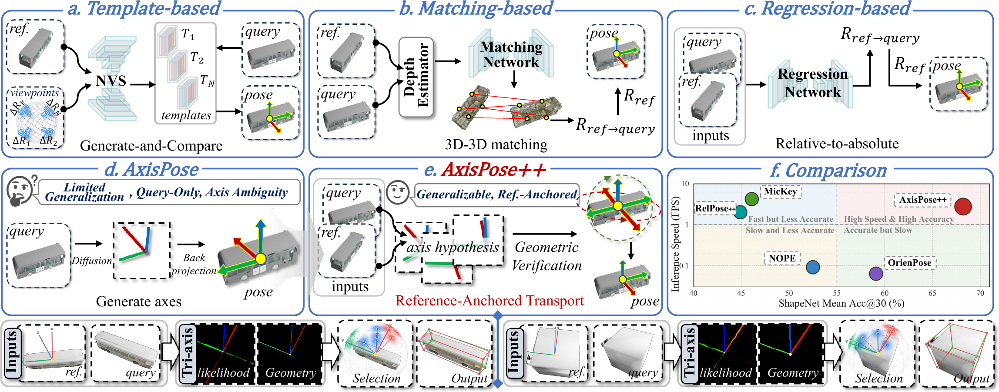
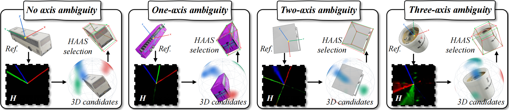
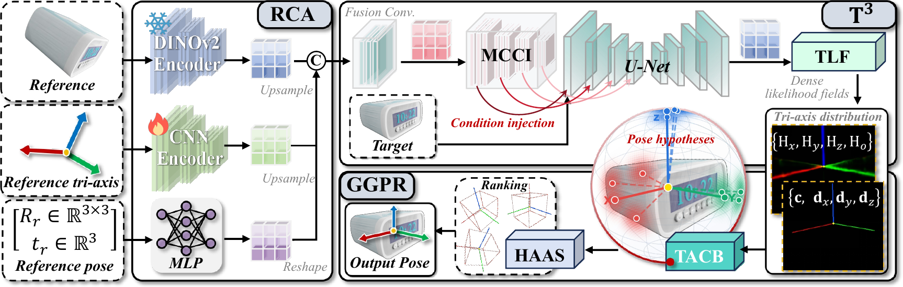
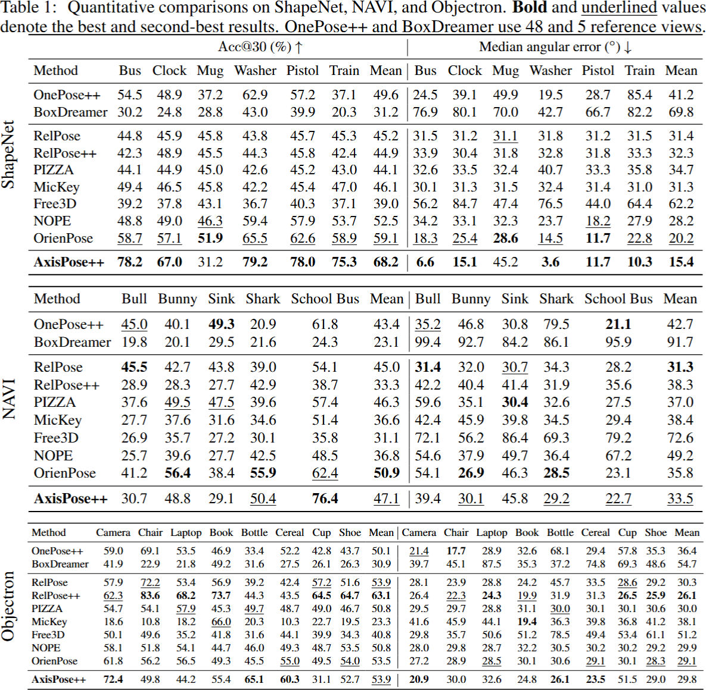
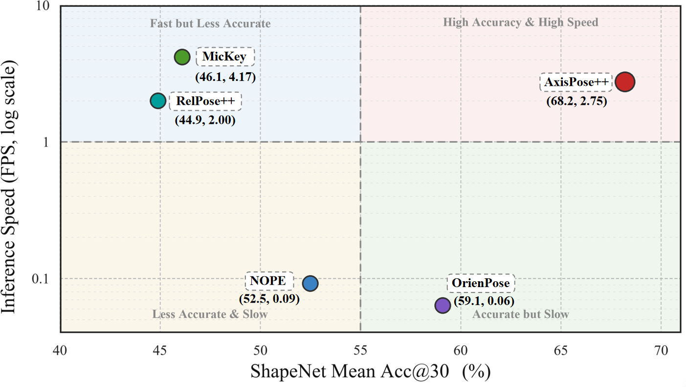
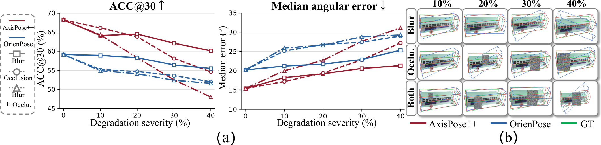
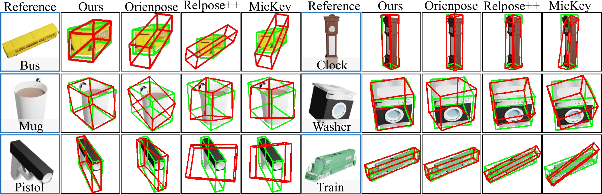
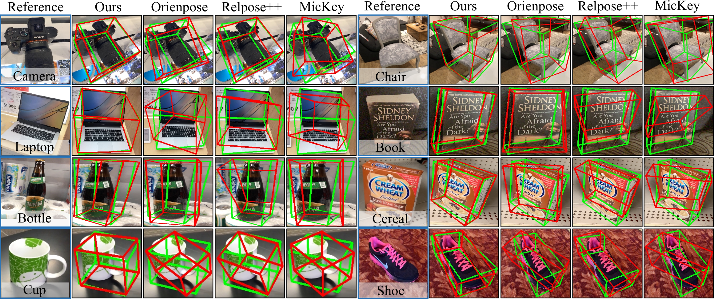

The reference defines the coordinates
The known reference pose and its tri-axis establish the coordinate convention in which the target rotation is estimated.
Anonymous ICLR 2027 submission
AxisPose++ estimates the 3D rotation of an unseen object from one posed reference image by predicting its reference-defined tri-axis in the target view and enforcing 3D geometric consistency.

A posed reference defines the coordinate convention, but the target image provides only an ambiguous 2D projection of the unknown 3D rotation.
AxisPose++ predicts reference-anchored tri-axis evidence in the target view, then resolves it through constrained 3D reconstruction.
Why reference-anchored axes
The known reference pose and its tri-axis establish the coordinate convention in which the target rotation is estimated.
Each likelihood field may contain several plausible axis directions, producing multiple image-space explanations of the target orientation.
TACB reconstructs orthogonal 3D frames from candidate directions, and HAAS selects the rotation best supported by the predicted evidence.

AxisPose++
RCA encodes the reference coordinate convention, T³ predicts target-view axis evidence, and GGPR reconstructs and selects the final 3D rotation.
Frozen DINOv2 features, the rendered reference tri-axis, and the reference pose form a condition that retains appearance and coordinate information.
A multi-scale conditioned U-Net predicts dense likelihood fields for the three axes and their shared origin, together with global image-plane geometry.
TACB reconstructs 3D rotations from plausible axis configurations, and HAAS ranks them using projection consistency, likelihood support, and algebraic stability.

From evidence to rotation
Dense likelihood fields retain plausible axis directions instead of committing to one 2D endpoint. TACB combines candidate directions and sampled extents to reconstruct orthogonal 3D rotations. HAAS then ranks the valid hypotheses against the predicted evidence.
Reported results
We evaluate AxisPose++ on six unseen ShapeNet categories and further test its direct transfer to NAVI and Objectron.
ShapeNet mean Acc@30
ShapeNet median angular error
Objectron mean Acc@30
Objectron median angular error

Efficiency
On ShapeNet, AxisPose++ reaches 68.2% mean Acc@30 at 2.75 FPS, placing it in the high-accuracy, high-speed region among the compared methods.

Robustness
We compare AxisPose++ directly with OrienPose, the current state-of-the-art method, under increasing blur, occlusion, and their combination. AxisPose++ shows stronger overall robustness as degradation severity increases.

Qualitative results


Reproducibility